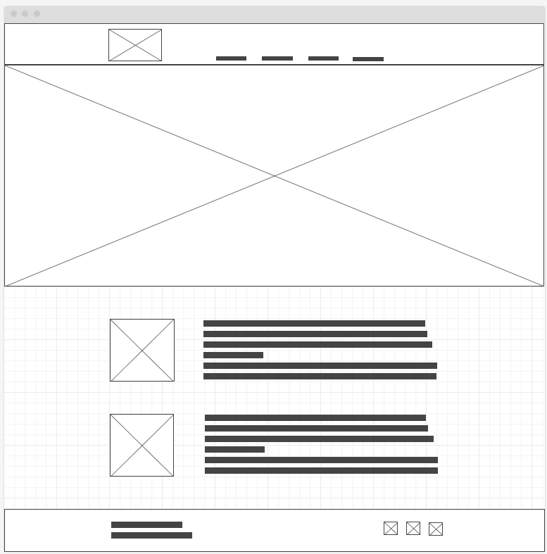
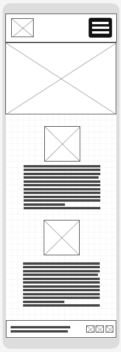

Site Name
Bouake Chamber of Commerce. This name is the city in which the chamber operates.
Site Purpose
The Bouake Chamber of Agriculture's website is designed to be a dynamic and interactive platform that serves the needs of its diverse stakeholders. By fulfilling these purposes, the website aims to contribute to the growth and development of the agricultural sector in Bouaké while fostering a strong, connected, and informed agricultural community.
Scenarios
- Where can I sign up for upcoming webinars on agriculture?
- How can I find information on sustainable farming practices?
- How can I connect with potential partners and customers in the agricultural sector?
- Is there a petition I can sign to support sustainable farming and environmental policies?
- Are there resources available for aspiring farmers looking for inspiration?
- Where can I find statistical data and research findings for my research project?
- How can exhibitors and visitors register for the agricultural fair online?
Color Schema
#721622
#065556
Typography
Titles: Young Serif
Text: Open Sans
Wireframes

Laptop wireframe
